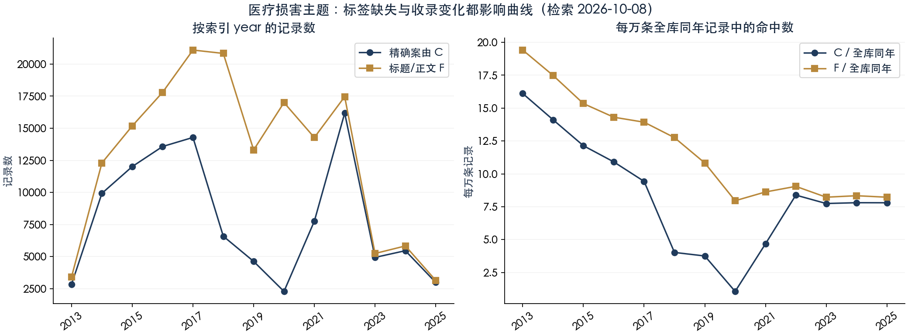
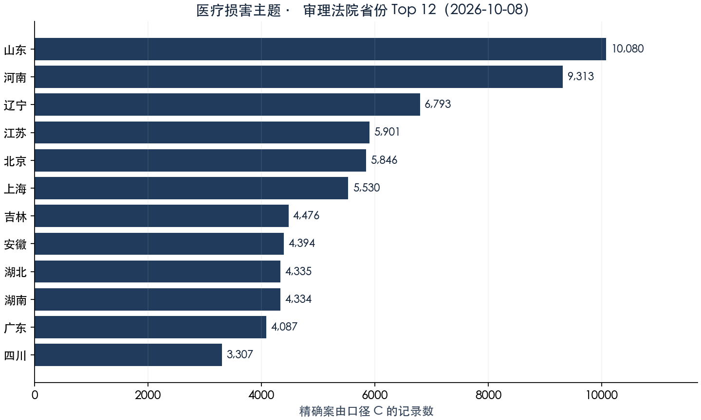

这是收录索引的检索统计，不是全国医疗纠纷普查。一案可有多份文书；同一纠纷的一审和二审使用不同案号，相异案号仍不等于独立纠纷数。主表采用精确案由 C，全文 F 是扩大召回的另一把尺，不能把它们之间的差全称作漏检。
一、主题定义：精确案由与全文分开计数
C 在 cause keyword 字段上精确匹配三种完整标签：“医疗损害责任纠纷”“医疗损害赔偿纠纷”“医疗事故损害赔偿纠纷”。今天前两项分别为 108,767 与 90 条，第三项没有精确标签记录。它只保证标签归属，不保证正文完整、实体审理或记录独立。
F 在标题或正文中检索同样的三个完整名称，每个词同时使用默认 ik_smart 与显式 ik_max_word 短语查询，取逻辑并集。标题可补回案由空白记录；正文也会召回引用医疗案件的保险、行政、代理合同等文书。本页没有把短词“医疗”“责任”混成主题总数。
| 口径 | 记录数 | 解释 |
|---|---|---|
| C：精确标签 | 108,857 | 主表分母 |
| F：标题或正文完整名称 | 182,134 | 主题相关检索集合 |
| C ∩ F | 101,937 | 标签与全文均命中 |
| C 中未被 F 检出 | 6,920 | 可能无正文/标题或名称省略 |
| F 中不在 C | 80,197 | 含标签空白与不同案由 |
| U：C ∪ F | 189,054 | 仅作抽样/口径诊断，不当案件普查 |
检索日期：2026-10-08；查询与聚合响应 JSON 中的键：medical_cause_labels, definitions, cause_exact, fulltext。记录数为精确计数，案号为 HLL 估算；百分比由表内分子/分母计算。
F 中精确标签 C 占 55.97%，案由空白有 74,340 条（40.82%），其余为其他标签或字段缺失。空白不能判为错案，其他标签也不能直接判为无关，须按研究问题阅读正文。F 的 ws_new 和 2021 批次分别有 50,095 和 22,184 条，而 C 中两批均为 0；今天两批的 U 各抽 40 条，案由均为空。案由标签的覆盖是时间曲线的一部分，不能把 2018–2020 的 C 低谷直接解读为诉讼低谷。F/U 尚含测试批次 bench 的 3 条记录；正式研究应先排除该批。主表 C 不包含 bench。
实测 match(cause.t, "医疗损害责任纠纷", operator="or") 命中 28,703,035 条，C 标签占比仅 0.379%。这是一个确定的“标签纯度”诊断；不是人工判读后的语义准确率。精确统计必须用裸 cause 字段 terms，不能加不存在的 cause.keyword。
二、逐年量：先明确时间字段，再归一化

| 索引 year | C 记录 | C 案号≈ | F 记录 | F 案号≈ | 全库同年 | C / 万条 | F / 万条 |
|---|---|---|---|---|---|---|---|
| 2013 | 2,839 | 2,799 | 3,421 | 3,030 | 1,762,537 | 16.11 | 19.41 |
| 2014 | 9,926 | 9,740 | 12,296 | 10,900 | 7,033,956 | 14.11 | 17.48 |
| 2015 | 12,012 | 11,643 | 15,179 | 13,072 | 9,894,747 | 12.14 | 15.34 |
| 2016 | 13,576 | 13,337 | 17,801 | 15,803 | 12,443,177 | 10.91 | 14.31 |
| 2017 | 14,282 | 14,089 | 21,095 | 19,855 | 15,147,489 | 9.43 | 13.93 |
| 2018 | 6,582 | 5,430 | 20,832 | 18,309 | 16,331,967 | 4.03 | 12.76 |
| 2019 | 4,621 | 2,637 | 13,307 | 11,063 | 12,290,542 | 3.76 | 10.83 |
| 2020 | 2,280 | 1,466 | 17,000 | 15,587 | 21,359,050 | 1.07 | 7.96 |
| 2021 | 7,753 | 6,438 | 14,274 | 12,303 | 16,548,198 | 4.69 | 8.63 |
| 2022 | 16,179 | 10,803 | 17,460 | 11,661 | 19,292,669 | 8.39 | 9.05 |
| 2023 | 4,931 | 4,504 | 5,237 | 4,778 | 6,365,236 | 7.75 | 8.23 |
| 2024 | 5,454 | 5,329 | 5,825 | 5,694 | 6,984,435 | 7.81 | 8.34 |
| 2025 | 2,980 | 2,880 | 3,141 | 3,040 | 3,818,342 | 7.80 | 8.23 |
检索日期：2026-10-08；查询与聚合响应 JSON 中的键：cause_exact, fulltext, corpus_years。记录数为精确计数，案号为 HLL 估算；百分比由表内分子/分母计算。
2022→2023，C 从 16,179 降到 4,931 条，变动 -69.5%；同年全库从 19,292,669 降到 6,365,236 条。C 的归一化变动为 -7.6%。该校正说明收录规模变化不可忽略，仍不能解释成真实医疗纠纷发生量：公开选择、案由覆盖、收录批次都没有被完全校正。
year 由 date 派生；部分批次记录的是公开/采集日期，不能统一解释为裁判落款年。特别是 2024、2021_x、2022_x 批次存在年份后移风险，本轮未逐份解析落款日。2025 年收录是否完整亦未取得独立普查依据。不要用此曲线识别法律生效前后因果效应。
表中展示 2013–2025；C 另有 4,749 条更早的索引年份记录，包括 1970 年异常值 1 条。另有 693 条 year 缺失，以 C 总记录数 108,857 减去全部 year 桶记录数 108,164 推得；年度表未纳入这些记录，不强补年份。早期样本少于 30 的年份无法得出统计结论。未列年度值保留在 JSON 响应中，缺失年度以总数差额披露。
相异案号仅在 wildcard(caseNo,"*号") 子集中使用 cardinality(precision_threshold=40000)：C 合格案号记录 107,586 条，相异原始案号约 95,444 个。HLL 是估算，非格式合格记录未进入案号分母；本轮未归一化括号与空白，也未跨审级关联同一纠纷，不能把记录数与 HLL 差额全部算作重复案件。
三、地域：法院省份，不是患者所在地

| 省份/字段状态 | C 记录 | 占全部 C |
|---|---|---|
| 山东 | 10,080 | 9.26% |
| 河南 | 9,313 | 8.56% |
| 辽宁 | 6,793 | 6.24% |
| 江苏 | 5,901 | 5.42% |
| 北京 | 5,846 | 5.37% |
| 上海 | 5,530 | 5.08% |
| 吉林 | 4,476 | 4.11% |
| 安徽 | 4,394 | 4.04% |
| 湖北 | 4,335 | 3.98% |
| 湖南 | 4,334 | 3.98% |
| 广东 | 4,087 | 3.75% |
| 四川 | 3,307 | 3.04% |
| 浙江 | 3,282 | 3.01% |
| 陕西 | 2,898 | 2.66% |
| 河北 | 2,573 | 2.36% |
| 重庆 | 2,467 | 2.27% |
| 福建 | 1,960 | 1.80% |
| 黑龙江 | 1,918 | 1.76% |
| 广西 | 1,866 | 1.71% |
| 云南 | 1,690 | 1.55% |
| 江西 | 1,634 | 1.50% |
| 新疆 | 1,474 | 1.35% |
| 甘肃 | 1,404 | 1.29% |
| 山西 | 1,351 | 1.24% |
| 天津 | 1,345 | 1.24% |
| 贵州 | 1,241 | 1.14% |
| 内蒙古 | 908 | 0.83% |
| 宁夏 | 515 | 0.47% |
| 青海 | 263 | 0.24% |
| 海南 | 187 | 0.17% |
| 西藏 | 16 | 0.01% |
| 字段空白 | 11,358 | 10.43% |
| 不规范/非省份取值（未强行归并） | 111 | 0.10% |
检索日期：2026-10-08；查询与聚合响应 JSON 中的键：cause_exact。记录数为精确计数，案号为 HLL 估算；百分比由表内分子/分母计算。
省份空白 11,358 条（10.43%），另有 111 条兵团法院、最高人民法院或异常字符串等非标准值，单列而不强配省份。图表将省/市全称归并到简称；不同地区公开与收录力度不一致，不能由记录榜推断医疗风险、纠纷发生率或医院质量。
四、审理程序与文书类型：编码拆开、缺失单列
| 程序归并 | C 记录 | 占全部 C | 案号交叉检查 |
|---|---|---|---|
| 一审：1/0301/一审及各类一审 | 67,161 | 61.70% | 含“初” 65,307，97.24% |
| 二审：2/0302/二审及各类二审 | 27,141 | 24.93% | 含“终” 27,051，99.67% |
| 其他程序/空白/无法归并 | 14,555 | 13.37% | 不强制解释为再审或执行 |
原始程序编码头部（可核验归并）
| 原始 procedure | 记录 | 占 C |
|---|---|---|
| 1 | 37,965 | 34.88% |
| 民事一审 | 23,751 | 21.82% |
| 2 | 17,818 | 16.37% |
| 民事二审 | 7,634 | 7.01% |
| 3 | 5,045 | 4.63% |
| 空字符串 | 4,891 | 4.49% |
| 一审 | 4,640 | 4.26% |
| 二审 | 1,354 | 1.24% |
| 执行实施 | 1,164 | 1.07% |
| 民事审判监督 | 1,051 | 0.97% |
| 4 | 864 | 0.79% |
| 0301 | 805 | 0.74% |
| 其他 | 513 | 0.47% |
检索日期：2026-10-08；查询与聚合响应 JSON 中的键：cause_procedure_crosscheck。记录数为精确计数，案号为 HLL 估算；百分比由表内分子/分母计算。
数字码 3 没有统一当作再审，4 没有直接当作全部执行。一、二审的数量是文书量，不是上诉率；本轮同时展示原始编码与案号字样交叉检查，缺口留在其他桶。不同时限定互不兼容的 caseType=判决 与 procedure=民事一审。
| 标题识别文类（互斥） | C 记录 | 占全部 C |
|---|---|---|
| 决定书 | 57 | 0.05% |
| 判决书 | 59,461 | 54.62% |
| 裁定书 | 35,842 | 32.93% |
| 调解书 | 1,334 | 1.23% |
| 通知书 | 1,206 | 1.11% |
| 标题未能识别 | 10,957 | 10.07% |
检索日期：2026-10-08；查询与聚合响应 JSON 中的键：cause_doctype_exclusive。记录数为精确计数，案号为 HLL 估算；百分比由表内分子/分母计算。
索引没有独立的 docType 字段，本表按标题短语识别，优先顺序为判决书→裁定书→调解书→决定书→通知书，后项排除前项，余项为未识别。未以正文第一行补型：部分旧批次会把裁定正文抬头写成判决书。2025 年的 2,980 条 C 记录全部无法由标题识别；它们的标题多是“一审民事案”等，绝不能把零判决书解释为法院没有判决。可下载逐年文类缺口。
五、鉴定与责任关键词：只报共现，不报鉴定完成率
第一组覆盖鉴定及其常见表述，第二组覆盖因果关系、过错、知情同意与举证责任。每一项使用正文短语的双 analyzer 并集；各词可在同一记录中同时出现，不能相加为百分之百。
| 正文词/短语 | C 命中 | C 共现率 | 全库命中 | 全库共现率 | 相对全库富集 |
|---|---|---|---|---|---|
| 鉴定 | 68,313 | 62.75% | 14,559,634 | 9.083% | 6.9 倍 |
| 司法鉴定 | 54,403 | 49.98% | 5,623,002 | 3.508% | 14.2 倍 |
| 医疗事故鉴定 | 7,581 | 6.96% | 13,496 | 0.008% | 827.1 倍 |
| 医疗损害鉴定 | 9,742 | 8.95% | 16,043 | 0.010% | 894.2 倍 |
| 鉴定意见 | 47,040 | 43.21% | 4,055,986 | 2.530% | 17.1 倍 |
| 因果关系 | 59,425 | 54.59% | 1,178,175 | 0.735% | 74.3 倍 |
| 过错 | 66,285 | 60.89% | 6,188,784 | 3.861% | 15.8 倍 |
| 知情同意 | 1,901 | 1.75% | 10,298 | 0.006% | 271.8 倍 |
| 举证责任 | 13,488 | 12.39% | 2,824,919 | 1.762% | 7.0 倍 |
检索日期：2026-10-08；查询与聚合响应 JSON 中的键：cause_keywords, cause_keywords_repeat, corpus_keywords。记录数为精确计数，案号为 HLL 估算；百分比由表内分子/分母计算。
“鉴定”命中 68,313 条，占 C 的 62.75%。分母含标签存在但正文为空的记录，因此该比例甚至不等于有正文记录中的提及率。它可能是当事人的申请、未启动的鉴定、外院既有意见或他案援引。富集倍数只比较词在两个收录集合的出现密度，不表示法理重要性、法院采纳概率或因果关系成立。
本轮对“医疗损害责任纠纷”分别查默认与 ik_max_word，正文两路均为 140,666，标题两路均为 159,065。这个词本轮没有分词差额；不能据此推出所有医疗术语都可靠。完整查询已附，词频口径必须逐词复核，不用“取两路较大数”代替真正逻辑并集。
检索日期：2026-10-08；查询与聚合响应 JSON 中的键：analyzer_counts。记录数为精确计数，案号为 HLL 估算；百分比由表内分子/分母计算。
六、分层抽样与语义纯度的边界
对 U 逐个非空 dataset 抽样，14 批各 40 条、bench 的 3 条全部检查，总 n=563。使用 random_score(seed=20261008, field="_seq_no") 与 boost_mode="replace"；按每批母体量加权，不把等额样本直接混成全库比例。批内仍可能受分片分数平手影响，这不是严格简单随机抽样。
| dataset | U 母体 | n | 标签/字串见证 | 标题/标签锚定 | 正文空 | 公开事由占位 |
|---|---|---|---|---|---|---|
| 2019_1 | 3,869 | 40 | 40/40 | 36/40 | 3 | 0 |
| 2019_2 | 4,867 | 40 | 40/40 | 40/40 | 40 | 0 |
| 2020 | 1,466 | 40 | 40/40 | 37/40 | 2 | 0 |
| 2021 | 22,184 | 40 | 40/40 | 38/40 | 9 | 0 |
| 2021_x | 9,690 | 40 | 40/40 | 37/40 | 1 | 0 |
| 2022 | 7,062 | 40 | 40/40 | 38/40 | 3 | 0 |
| 2022_x | 4,242 | 40 | 40/40 | 40/40 | 0 | 0 |
| 2023 | 681 | 40 | 40/40 | 37/40 | 0 | 0 |
| 2023_2 | 6,966 | 40 | 40/40 | 38/40 | 0 | 0 |
| 2023_x | 2,522 | 40 | 40/40 | 39/40 | 0 | 0 |
| 2024 | 5,855 | 40 | 40/40 | 36/40 | 0 | 0 |
| 2025 | 3,147 | 40 | 40/40 | 35/40 | 0 | 0 |
| bench | 3 | 3 | 3/3 | 3/3 | 0 | 0 |
| ws | 66,405 | 40 | 40/40 | 38/40 | 0 | 0 |
| ws_new | 50,095 | 40 | 40/40 | 37/40 | 0 | 12 |
检索日期：2026-10-08；查询与聚合响应 JSON 中的键：sample-summary。记录数为精确计数，案号为 HLL 估算；百分比由表内分子/分母计算。
563/563 能在精确标签、标题或正文找到至少一个查询名称的字面见证，这是查询执行检查。529/563 有标题或精确标签锚定；按母体加权估计 94.07%。另 34 条只在正文中见证，已发现保险、代理合同、行政等案由。这里的“锚定比例”不是人工主题纯度，不能把它宣传为 94.07% 相关案件准确率。
空正文样本 58/563，分层加权估计 5.82%；公开事由占位文本 12/563，加权估计 7.95%。2019_2 为 40/40 空正文；ws_new 12/40 的正文是“以调解方式结案的”等公开事由。exists(body) 不能查出这些问题，字串和长度要实际读取。本轮样本最长 14,700 字，不能沿用已于 2026-09 修复的“固定 6,000/16,000 字截断率”。未对当前语料逐份核对原始源文本，仍不承诺全文完整率。
索引没有统一身份归并后的原告字段，本轮没有全量提取并人工校验诉讼角色。匿名姓名、共同原告、医疗机构作为反诉原告/上诉人等不能直接合并。最大单一原告占比未取得，不能宣称样本没有批量诉讼簇偏差；抽样只用于展示检索与正文缺陷，不用于推出纠纷结果或全国比例。
七、研究引用与复现附录
建议写作方式：“本文使用文书查收录索引，2026年10月8日检索；主口径为医疗损害完整案由 keyword 标签集合，记录与案号分别统计；年份为索引 year 而非统一落款年。扩展全文集合另列，用于识别案由空白与非主体援引。未公开文书、正文空白及当事人身份归并不足限制外推。”
主查询不收钱、不写入索引。当前服务可访问字段已先由 mapping 核验，计数均检查 timed_out=false、_shards.failed=0、hits.total.relation=eq。主集合总量与鉴定共现重复查询相等，并用已知有量的“民间借贷纠纷”标签作上游对照。本页的百分比均是统计集合内部比例，样本小于 30 无法得出统计结论。
精确案由 C 的可执行查询
{
"size": 0,
"track_total_hits": true,
"query": {
"terms": {
"cause": [
"医疗损害责任纠纷",
"医疗损害赔偿纠纷",
"医疗事故损害赔偿纠纷"
]
}
},
"aggs": {
"valid_caseNo": {
"filter": {
"wildcard": {
"caseNo": "*号"
}
},
"aggs": {
"distinct": {
"cardinality": {
"field": "caseNo",
"precision_threshold": 40000
}
}
}
},
"years": {
"terms": {
"field": "year",
"size": 100,
"order": {
"_key": "asc"
}
},
"aggs": {
"valid_caseNo": {
"filter": {
"wildcard": {
"caseNo": "*号"
}
},
"aggs": {
"distinct": {
"cardinality": {
"field": "caseNo",
"precision_threshold": 40000
}
}
}
}
}
},
"province": {
"terms": {
"field": "province",
"size": 1000,
"missing": "__MISSING__"
}
},
"procedure": {
"terms": {
"field": "procedure",
"size": 1000,
"missing": "__MISSING__"
}
},
"caseType": {
"terms": {
"field": "caseType",
"size": 1000,
"missing": "__MISSING__"
}
},
"cause": {
"terms": {
"field": "cause",
"size": 3000,
"missing": "__MISSING__"
}
},
"dataset": {
"terms": {
"field": "dataset",
"size": 1000,
"missing": "__MISSING__"
}
}
}
}下载全部公开查询与聚合响应 JSON · 下载分层诊断样本汇总（不含个人文书内容） · 原始逐案响应保留在本次内部执行证据中，未公开个人姓名与正文。
常见研究问题
本库收录了多少医疗损害主题记录？
2026-10-08 检索，精确案由集合 C 为 108,857 条，标题/正文双分词器集合 F 为 182,134 条，两者并集 U 为 189,054 条。它们是不同检索口径，不能互换为全国真实案件总数。主表使用 C；C 中合格原始案号约 95,444 个，为 HLL 估算。
鉴定占比是否说明法院实际委托鉴定的比例？
不能。精确案由集合内 68,313 条正文命中“鉴定”，占 62.75%。它只说明检索共现，可能包含鉴定申请、拒绝鉴定、既往鉴定或他案引述；未读取正文的空记录也在分母中，不能解释为实际鉴定率。
2023 年记录变少能说明医疗纠纷减少吗？
不能。C 的 2022→2023 绝对记录数变动为 -69.5%，按全库同年记录归一化后的变动为 -7.6%。归一化只能校正收录规模，不能校正案由空白、公开选择或日期语义，因此不推断真实医疗纠纷增减。
为什么不用检索页面的长案由过滤器总数？
案由 text 子字段的分词 OR 查询“医疗损害责任纠纷”命中 28,703,035 条，而本页精确标签 C 只有 108,857 条，精确标签占比仅 0.379%。本页使用 keyword 字段 terms，保留全文集合单独对照。
这些统计能否直接当论文中的胜诉率？
不能。本页不计算胜诉率、诉请支持率或鉴定结论采纳率。记录可能重复、程序和类型编码不一、部分正文为空或是未公开事由，且没有统一的原告身份与裁判结果人工编码。论文应引用集合定义、检索日期与局限，并按研究问题重新清洗。
数据来源：文书查中国裁判文书收录索引。所有本页计数的检索日期为 2026-10-08。页面用于研究方法说明；未计算胜诉率、诉请支持率或真实鉴定完成率。新增数据与清洗变化可能使重查结果不同。